1. Introduction: Find the Records That Matter
Imagine kijiye ki aap ek University ke Examination Cell mein Head Data Analyst hain. Semester exams ke baad aapke paas 5,000 students ka master records table aata hai. University Chancellor aur Deans aapse 5 critical business questions puchte hain:
- "Poore college mein sabse highest marks kis student ke aaye hain?" → Sorting (Descending order)
- "Kaun se students exam dene ke ineligible hain kyunki unki attendance 75% se kam hai?" → Filtering (attendance < 75)
- "Scholarship ke liye eligible students kaun hain jinhone 85+ marks aur 80%+ attendance dono maintain ki hai?" → Compound Filtering (Condition A & Condition B)
- "Class mein 1st, 2nd, aur 3rd rank kiski aayi hai, aur agar do students ke 95 marks barabar hain toh tie kaise break hoga?" → Ranking with Tie-Breakers
- "Computer Science aur AI department ke sabhi students ka batch list dijiye." → Set Membership Filtering (isin(['CS', 'AI']))
Yeh sabhi questions data science ki teen foundational operations par depend karte hain: Sorting, Ranking, aur Filtering. In teeno ka difference samajhna bohot zaroori hai:
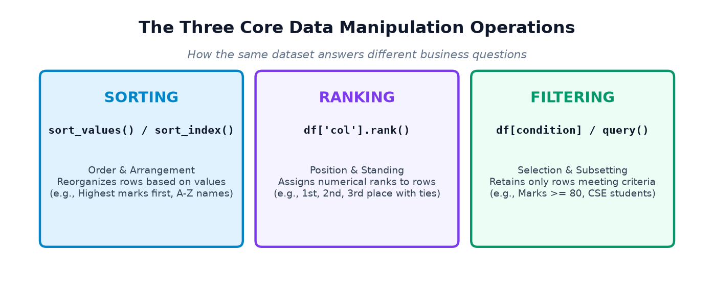
- Sorting: Table ki rows ke physical sequence ko badalta hai (jaise highest marks sabse upar, ya alphabetical A-Z order).
- Ranking: Rows ki physical order ko badle bina har row ko ek official numeric position (1.0, 2.0, 3.0...) assign karta hai, aur equal values (ties) ko mathematically resolve karta hai.
- Filtering: Sirf unhi records ko retain karta hai jo specific criteria ya business conditions ko satisfy karte hain, aur baki rows ko omit kar deta hai.
Chaliye in teeno pillars ko step by step practical python code, verified outputs, aur industrial mini-projects ke saath detail mein master karte hain!
2. Sorting with sort_values()
DataFrame ki rows ko kisi specific column ki values ke hisaab se reorder karne ke liye Pandas ka sabse common method DataFrame.sort_values() hai.
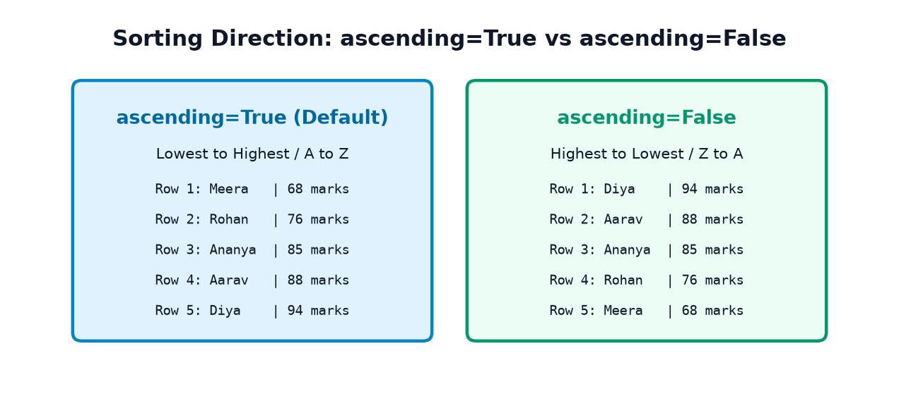
Core Parameters of sort_values()
by='column_name': Kis column ke aadhar par sort karna hai. Yeh single string ya list of strings ho sakta hai.ascending=True: Default behavior. Numbers ko chote se bada (1 to 100) aur text ko alphabetical order (A to Z) mein arrange karta hai.ascending=False: Reverse order. Numbers ko highest to lowest (100 to 1) aur text ko reverse alphabetical (Z to A) mein arrange karta hai.inplace=False: Default behavior. Yeh ek naya sorted DataFrame return karta hai, original DataFrame ko modify nahi karta. Data science mein hamesha naya object return karna safe hota hai taaki original raw data intact rahe.
Example 1: Sorting Student Marks (Ascending vs Descending)
import pandas as pd # 1. Create a synthetic student dataset students_raw = { 'student_id': ['S101', 'S102', 'S103', 'S104', 'S105', 'S106'], 'name': ['Aarav', 'Diya', 'Rohan', 'Ananya', 'Kabir', 'Meera'], 'department': ['CS', 'IT', 'CS', 'ECE', 'IT', 'CS'], 'marks': [88, 94, 76, 85, 91, 68], 'attendance': [92, 96, 85, 90, 88, 75] } df_students = pd.DataFrame(students_raw) # 2. Sort by marks ascending (lowest first) sort_asc = df_students.sort_values(by='marks', ascending=True) print("--- Sorted by Marks Ascending (Lowest First) ---") print(sort_asc[['student_id', 'name', 'marks']]) # 3. Sort by marks descending (highest first) sort_desc = df_students.sort_values(by='marks', ascending=False) print("\n--- Sorted by Marks Descending (Leaderboard) ---") print(sort_desc[['student_id', 'name', 'marks']])
Notice Row Index Retention: Dhyan dijiye ki descending sort mein Diya ka row index 1 sabse upar chala gaya, aur Meera ka index 5 sabse niche. Pandas sorting ke baad original row index numbers ko preserve karta hai!
Example 2: Sorting E-Commerce Products by Price
import pandas as pd products_raw = { 'product': ['Laptop Bag', 'Wireless Mouse', '4K Monitor', 'Mechanical Keyboard', 'USB-C Cable'], 'category': ['Accessories', 'Electronics', 'Displays', 'Electronics', 'Accessories'], 'price': [1299, 799, 21999, 3499, 299] } df_products = pd.DataFrame(products_raw) # Sort by price descending to find premium catalog products premium_products = df_products.sort_values(by='price', ascending=False) print("--- Catalog Sorted by Price (High to Low) ---") print(premium_products)
3. Sorting by Multiple Columns with Mixed Directions
Real-world datasets mein do records ki primary value aksar identical ho sakti hai (jaise do students ke 95 marks ya do products ki same price). Aise cases mein tie-break karne ke liye hum Multiple Column Sorting use karte hain.
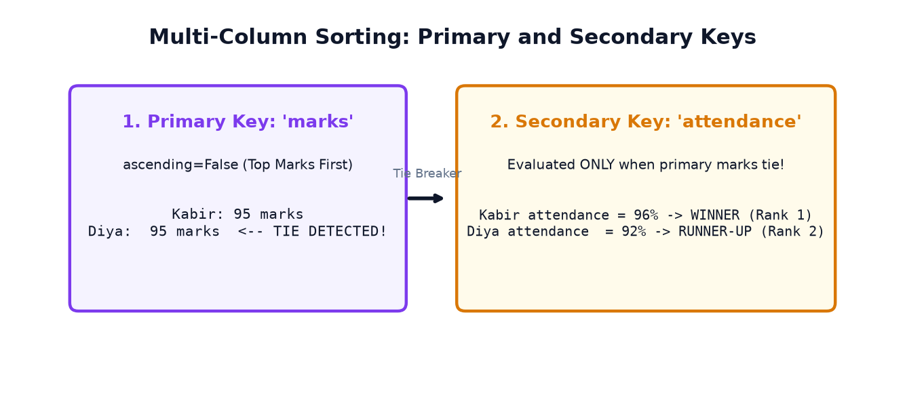
Evaluation Order & Mixed Directions
by=['col1', 'col2']: Pehle rowscol1ke hisaab se sort hongi. Agarcol1mein values distinct hain, tohcol2ko dekha bhi nahi jayega.col2sirf tab evaluate hota hai jabcol1mein tie (equal values) ho!ascending=[True, False]: Aap har column ke liye individual sorting direction specify kar sakte hain boolean list pass karke.
Example 1: Student Leaderboard with Attendance Tie-Breaker
Aarav, Diya, Kabir aur Rohan ke beech marks tie hone par attendance tie-breaker kaise kaam karta hai dekhiye:
import pandas as pd leaderboard_raw = { 'student_id': ['S1', 'S2', 'S3', 'S4', 'S5', 'S6'], 'name': ['Aarav', 'Diya', 'Rohan', 'Ananya', 'Kabir', 'Meera'], 'marks': [90, 95, 90, 85, 95, 90], # Ties at 95 and 90 'attendance': [88, 92, 95, 90, 96, 82] } df_board = pd.DataFrame(leaderboard_raw) # Primary: marks descending, Secondary: attendance descending sorted_board = df_board.sort_values(by=['marks', 'attendance'], ascending=[False, False]) print("--- Leaderboard (Marks Desc, then Attendance Desc) ---") print(sorted_board[['name', 'marks', 'attendance']])
Step-by-Step Tie Analysis:
- Diya aur Kabir dono ke 95 marks the. Secondary sorting attendance par hui: Kabir (96%) ne Diya (92%) ko beat kar diya aur Rank 1 position li!
- Rohan, Aarav, aur Meera teeno ke 90 marks the. Attendance ke hisaab se order bana: Rohan (95%) → Aarav (88%) → Meera (82%).
Example 2: Employee Directory (Department Ascending, Salary Descending)
import pandas as pd emp_raw = { 'name': ['Alice', 'Bob', 'Charlie', 'David', 'Eva', 'Frank'], 'department': ['Sales', 'IT', 'IT', 'Sales', 'HR', 'HR'], 'salary': [65000, 85000, 92000, 72000, 58000, 62000] } df_emp = pd.DataFrame(emp_raw) # Mixed directions: Department A-Z, within department highest salary first emp_sorted = df_emp.sort_values(by=['department', 'salary'], ascending=[True, False]) print("--- Employee Directory (Dept Asc, Salary Desc) ---") print(emp_sorted)
4. Sorting with sort_index()
Jab aap column values ke bajaye DataFrame ke Index labels ko arrange karna chahte hain, toh df.sort_index() use hota hai.
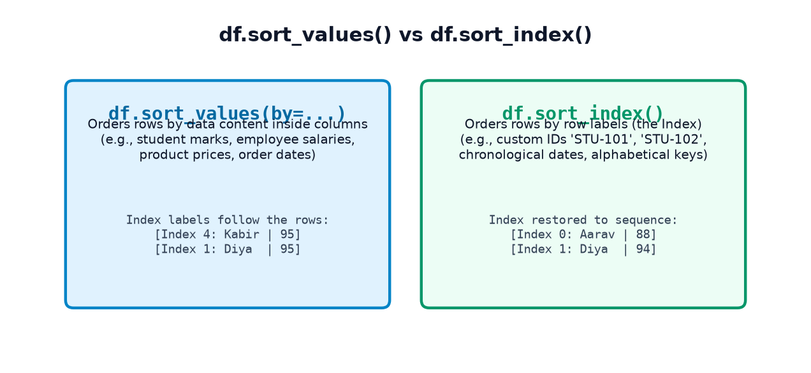
When is sort_index() Useful?
- Jab aapne
sort_values()kiya tha aur rows ka index jumble ho gaya (e.g., 4, 1, 2, 0, 5), aur aap use wapas original sequential index order mein lana chahte hain. - Jab aapka index custom labels hai, jaise
'STU-101','STU-102', ya dates (Time-Series data).
Example 1: Sorting Custom Student IDs Index
import pandas as pd df_custom_idx = pd.DataFrame({ 'name': ['Diya', 'Aarav', 'Meera', 'Kabir'], 'marks': [94, 88, 68, 91] }, index=['STU-104', 'STU-101', 'STU-108', 'STU-102']) print("--- Original Unsorted Index ---") print(df_custom_idx) # Sort by index ascending sorted_idx = df_custom_idx.sort_index(ascending=True) print("\n--- Sorted by Index (STU-101 to STU-108) ---") print(sorted_idx)
'January', 'February', 'March', 'April'), aur aap sort_index() chalate hain, toh Pandas unhe alphabetically sort karega: April, February, January, March! Yeh calendar chronological order nahi hai! Chronological order ke liye hamesha proper datetime index (pd.to_datetime()) use karein.
5. Ranking with rank() and Tie-Breaking Methods
Aksar students sochte hain ki Sorting aur Ranking ek hi cheez hai. Lekin data science aur business reporting mein dono bilkul alag hain:
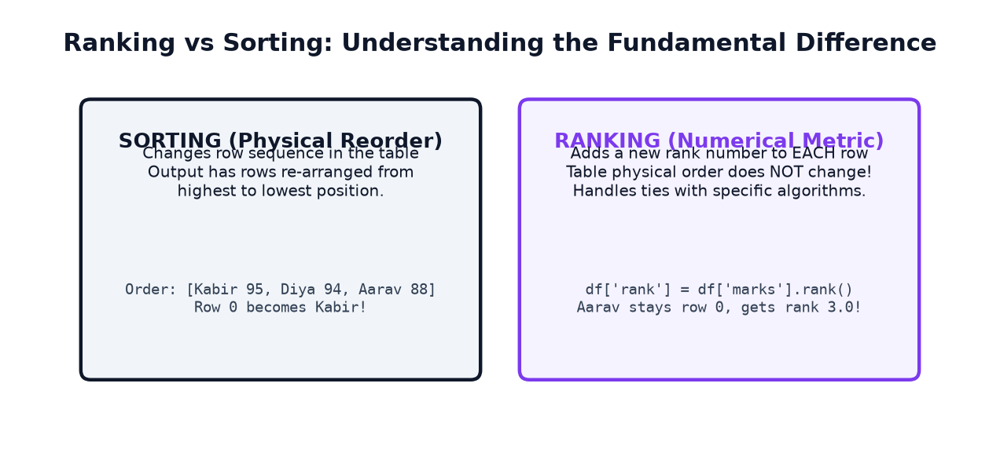
How rank() Works
Jab aap Series.rank(ascending=False) call karte hain, toh highest value ko rank 1 milta hai. Lekin jab do values equal hoti hain (ties), toh Pandas unhe kaise rank karega? Iske liye 5 distinct method options hain:
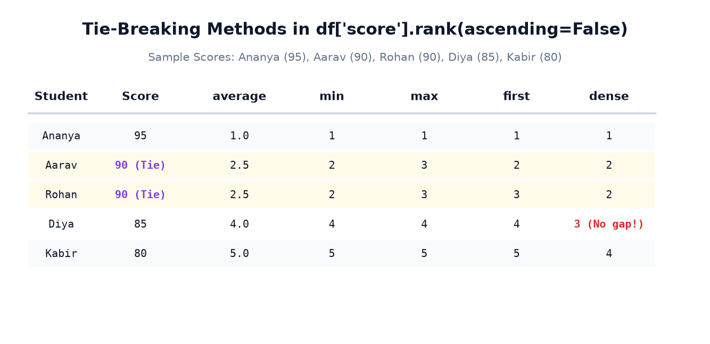
| Method | Tie-Breaking Algorithm | Scores: [95, 90, 90, 85, 80] Ranks | Typical Real-World Use Case |
|---|---|---|---|
average (Default) |
Tied positions ka mathematical average assign karta hai. | [1.0, 2.5, 2.5, 4.0, 5.0] |
Statistical analysis & non-parametric tests (Spearman correlation). |
min |
Tied positions mein se lowest rank number deta hai (Sports rank). | [1, 2, 2, 4, 5] |
Olympic medals & competitive exams (Joint 2nd rank; next is 4th). |
max |
Tied positions mein se highest rank number assign karta hai. | [1, 3, 3, 4, 5] |
Worst-case qualification scenarios. |
first |
Table mein jo row pehle aati hai use pehla rank milta hai. | [1, 2, 3, 4, 5] |
Arbitrary single-winner tie-breaking without duplicates. |
dense |
Ranks hamesha +1 se increment hoti hain, koi gap nahi chhodti! | [1, 2, 2, 3, 4] |
Corporate sales tiers, performance bands (Gold, Silver, Bronze). |
Example 1: Demonstrating All 5 Ranking Methods on Tied Scores
import pandas as pd tie_data = pd.DataFrame({ 'student': ['Aarav', 'Diya', 'Rohan', 'Ananya', 'Kabir'], 'score': [90, 85, 90, 95, 80] # Aarav and Rohan tied at 90 }) s = tie_data['score'] tie_data['rank_avg'] = s.rank(ascending=False, method='average') tie_data['rank_min'] = s.rank(ascending=False, method='min').astype(int) tie_data['rank_dense'] = s.rank(ascending=False, method='dense').astype(int) print("--- Ranking Comparison on Tied Scores ---") print(tie_data)
Notice the Gap in 'min' vs No Gap in 'dense':
rank_minmein Aarav aur Rohan dono ko Rank 2 mila, lekin agli student Diya ko Rank 4 mila (Rank 3 skip ho gaya kyunki 2 students ne positions 2 aur 3 occupy kar li theen).rank_densemein Aarav aur Rohan ko Rank 2 mila, aur agli student Diya ko Rank 3 mila (koi gap nahi aaya)!
6. Filtering Using Comparison Operators & Boolean Masks
Data science mein 90% analysis dataset ke ek specific subset par ki jaati hai (jaise sirf specific department, sirf high-spending customers, ya sirf defacing errors). Pandas mein rows ko filter karne ka standard tareeqa Boolean Masking kehlata hai.
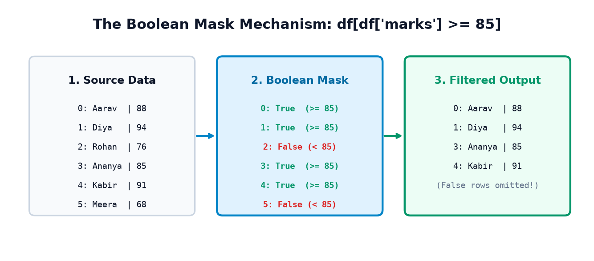
Comparison Operators in Pandas
Aap kisi bhi column par standard comparison operators use karke boolean series generate kar sakte hain:
==(Equal to):df['dept'] == 'CS'!=(Not equal to):df['dept'] != 'Mech'>(Greater than):df['marks'] > 85<(Less than):df['attendance'] < 75>=(Greater than or equal to):df['marks'] >= 90<=(Less than or equal to):df['price'] <= 1000
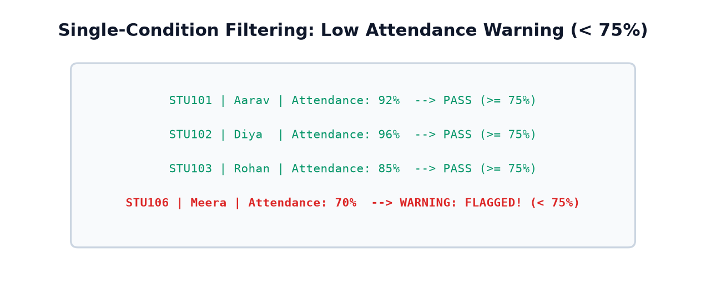
Example 1: Flagging Attendance Warning (< 75%)
import pandas as pd # 1. Generate Boolean Mask mask = df_students['attendance'] < 80 print("Boolean Mask Series:\n", mask) # 2. Filter rows satisfying the mask flagged = df_students[mask] print("\n--- Flagged Students (Attendance < 80%) ---") print(flagged[['student_id', 'name', 'attendance']])
df[df['marks'] >= 85] likhte hain aur result display hota hai, toh iska matlab yeh nahi hai ki baaki rows original DataFrame se delete ho gayi hain! Original df_students bilkul intact rehta hai. Agar aapko filtered result save karna hai, toh use naye variable mein assign karein: honors_df = df[df['marks'] >= 85].
7. Combining Multiple Conditions: & (AND), | (OR), and ~ (NOT)
Real-life business rules aksar multiple conditions ko combine karke banti hain (jaise: "Marks ≥ 85 hona chahiye AUR attendance ≥ 90% hona chahiye"). Yahan Python ke built-in keywords (and, or, not) nahi chalte, balki Pandas ke bitwise element-wise operators use hote hain!
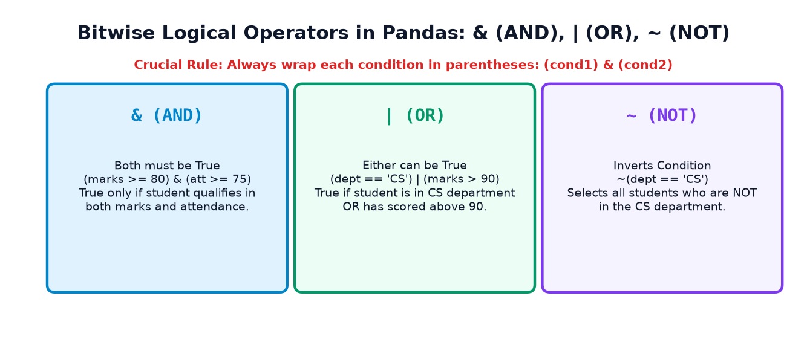
&, |) ki operator precedence comparison operators (>=, ==) se zyada hoti hai. Agar aap parentheses nahi lagayenge (e.g., df['marks'] >= 85 & df['att'] >= 90), toh Python crash ho jayega: TypeError: cannot compare a dtyped series with a scalar!Hamesha aise likhein:
(df['marks'] >= 85) & (df['att'] >= 90)
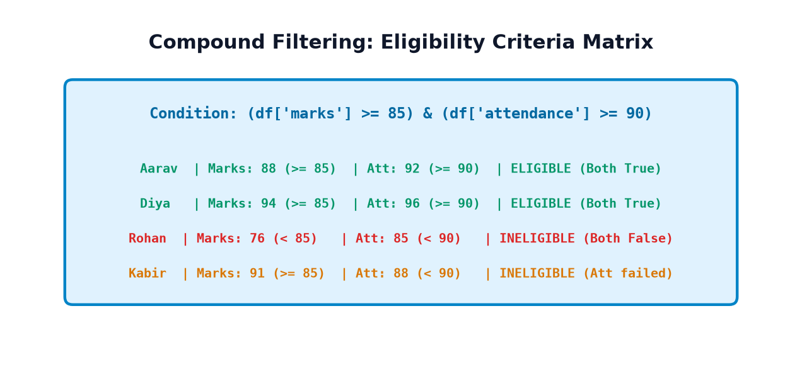
Example 1: Scholarship Eligibility (marks ≥ 85 AND attendance ≥ 90)
import pandas as pd # Combine with & (Both must be True) scholarship_mask = (df_students['marks'] >= 85) & (df_students['attendance'] >= 90) eligible_students = df_students[scholarship_mask] print("--- Scholarship Eligible Students (Marks >= 85 AND Att >= 90) ---") print(eligible_students[['name', 'department', 'marks', 'attendance']])
Example 2: Combining with | (OR) and ~ (NOT)
import pandas as pd # 1. OR condition: Either in ECE OR marks > 90 or_mask = (df_students['department'] == 'ECE') | (df_students['marks'] > 90) print("--- ECE Students OR Marks > 90 ---") print(df_students[or_mask][['name', 'department', 'marks']]) # 2. NOT condition: All students NOT in CS department not_cs_mask = ~(df_students['department'] == 'CS') print("\n--- Students NOT in CS Department ---") print(df_students[not_cs_mask][['name', 'department']])
8. Filtering Using isin(): Clean Set Membership
Agar aapko kisi column ko multiple values ke against check karna ho (jaise: department 'CS' ho, ya 'IT' ho, ya 'AI' ho), toh baar-baar | lagana bohot messy ho jata hai: (df['dept'] == 'CS') | (df['dept'] == 'IT') | (df['dept'] == 'AI'). Iska elegant, fast, aur Pythonic solution Series.isin() hai!
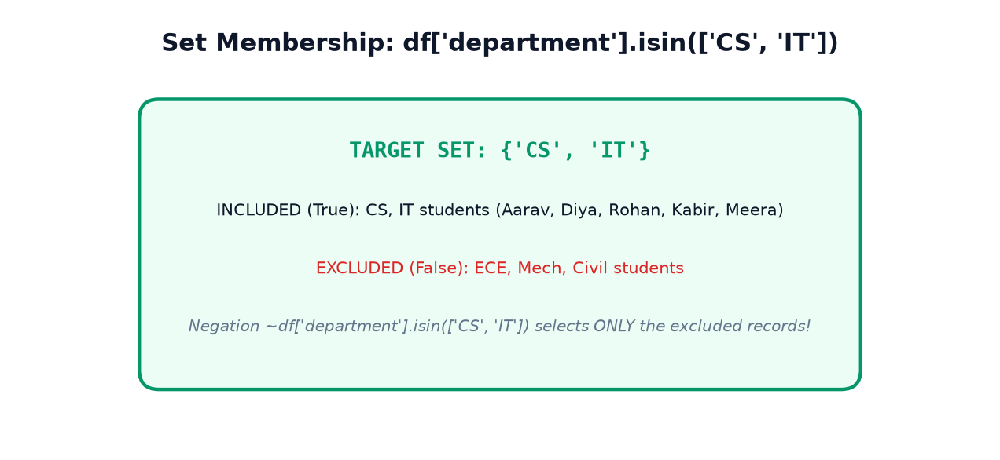
How isin() Works
df['col'].isin(['val1', 'val2', 'val3']): Agar cell ki value list ke kisi bhi item se match karti hai, tohTruereturn karta hai.~df['col'].isin(['val1', 'val2']): Tilde operator~lagane se yeh exclusion filter ban jaata hai (selects everything EXCEPT those values)!
Example 1: Selecting Tech Cohort (CS & IT Departments)
import pandas as pd target_depts = ['CS', 'IT'] # Select students belonging to target departments tech_students = df_students[df_students['department'].isin(target_depts)] print("--- Students in CS or IT Departments ---") print(tech_students[['name', 'department', 'marks']]) # Exclude CS and IT using ~ non_tech_students = df_students[~df_students['department'].isin(target_depts)] print("\n--- Excluded Students (Neither CS nor IT) ---") print(non_tech_students[['name', 'department', 'marks']])
9. Filtering with between(): Numerical Range Slicing
Jab aapko numerical values ko kisi range ke andar check karna ho (jaise: "Marks 80 se 90 ke beech hone chahiye"), toh standard expression (df['marks'] >= 80) & (df['marks'] <= 90) likhne ke bajaye aap Series.between(left, right) use kar sakte hain.
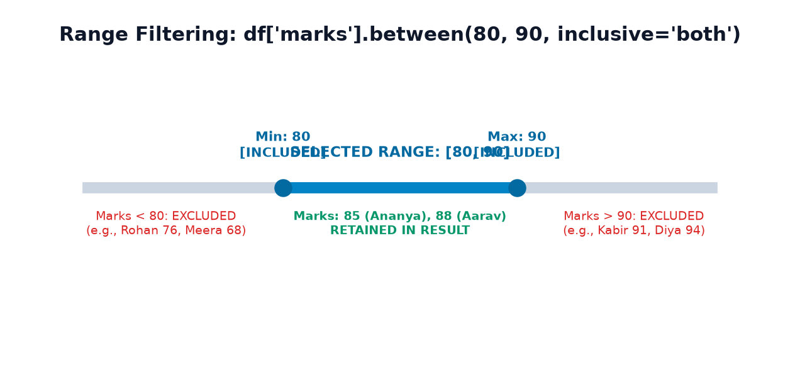
The inclusive Parameter Explained
inclusive='both'(Default): Lower bound aur Upper bound dono included hote hain ($left \le x \le right$).inclusive='neither': Dono boundaries excluded hoti hain ($left < x < right$).inclusive='left': Sirf lower bound included hota hai ($left \le x < right$).inclusive='right': Sirf upper bound included hota hai ($left < x \le right$).
Example 1: Filtering Scores in the 80–90 Interval
import pandas as pd # Filter students whose marks are in [80, 90] range_students = df_students[df_students['marks'].between(80, 90)] print("--- Students with Marks Between 80 and 90 (Inclusive) ---") print(range_students[['name', 'department', 'marks']])
10. Filtering Using query(): English-Like Readable Queries
Jab boolean filter conditions bohot lambi aur complex ho jaati hain, toh baar-baar df['...'] aur parentheses likhna tedious ho jaata hai. Pandas iska solution deta hai: DataFrame.query(). Yeh ek SQL-like string expression accept karta hai jo padhne mein natural English jaisa lagta hai.
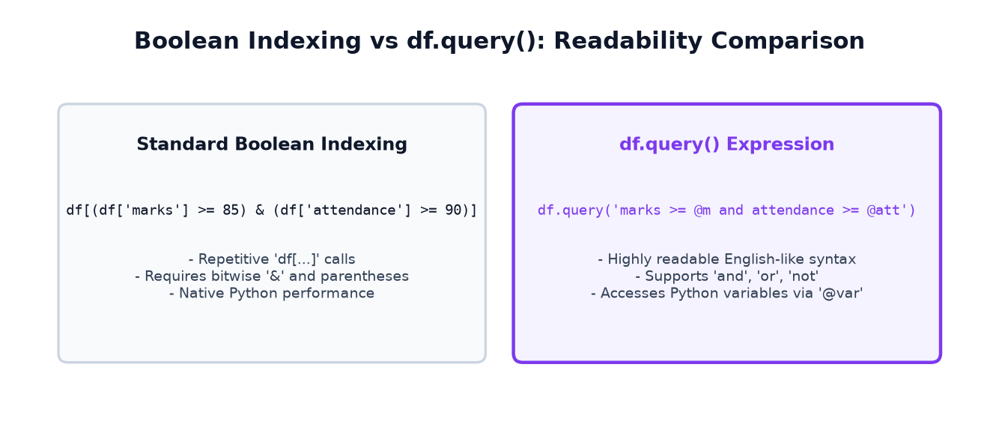
Key Features of query()
- Natural Keywords: Aap
and,or, aurnotseedhe string ke andar use kar sakte hain (bitwise&aur|ki zaroorat nahi hoti). - Referencing Python Variables with @: Agar aapko Python script ke kisi variable ko query string ke andar use karna hai, toh uske aage
@lagaya jaata hai (e.g.,@min_marks). - Equivalence:
df.query()aur standard boolean indexing 100% identical results return karte hain.
Example 1: Scholarship Filtering with @variable Syntax
import pandas as pd min_m = 85 min_att = 90 # Filter using query with @variable references query_res = df_students.query("marks >= @min_m and attendance >= @min_att") print("--- Query Result (marks >= 85 and attendance >= 90) ---") print(query_res[['name', 'department', 'marks', 'attendance']]) # Verify equivalence with standard boolean masking standard_res = df_students[(df_students['marks'] >= min_m) & (df_students['attendance'] >= min_att)] print(f"\nAre both filtering methods completely identical? {query_res.equals(standard_res)}")
11. Filtering Missing and Non-Missing Values
Topic 6 mein humne seekha tha ki missing values ko detect kaise karte hain. Ab hum dekhenge ki missing rows ko alag karke audit kaise kiya jaata hai aur valid rows ko downstream analysis ke liye kaise filter kiya jaata hai.
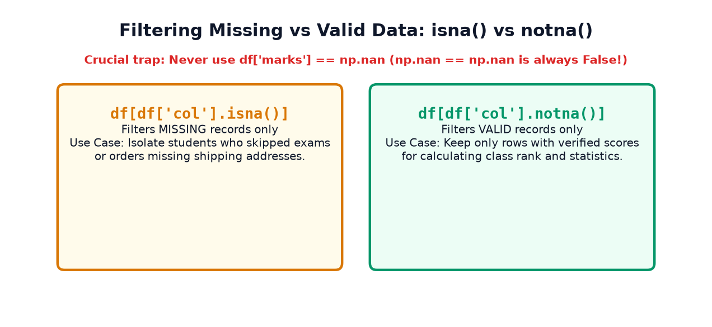
np.nan == np.nan hamesha False hota hai! Isliye agar aap likhte hain: df[df['attendance'] == np.nan], toh aapko ek empty DataFrame milega! Missing values filter karne ke liye sirf aur sirf .isna() ya .isnull() use karein!
Example 1: Isolating Records with Missing Attendance
import numpy as np import pandas as pd df_nulls = pd.DataFrame({ 'student_id': ['S1', 'S2', 'S3', 'S4'], 'name': ['Aarav', 'Diya', 'Rohan', 'Ananya'], 'attendance': [90.0, np.nan, 85.0, np.nan], 'marks': [88.0, 94.0, 76.0, 85.0] }) # 1. Filter students missing attendance missing_att = df_nulls[df_nulls['attendance'].isna()] print("--- Students with Missing Attendance (Need Investigation) ---") print(missing_att[['student_id', 'name', 'marks']]) # 2. Filter students with valid attendance AND marks >= 80 valid_cohort = df_nulls[df_nulls['attendance'].notna() & (df_nulls['marks'] >= 80)] print("\n--- Verified Eligible Students ---") print(valid_cohort[['student_id', 'name', 'attendance', 'marks']])
12. Combining Sorting, Ranking, and Filtering: Practical Workflows
Asal enterprise workflows mein yeh teeno tools kabhi akele use nahi hote. Ek typical data analysis pipeline mein Filter → Sort → Rank ka ek strict sequence hota hai.
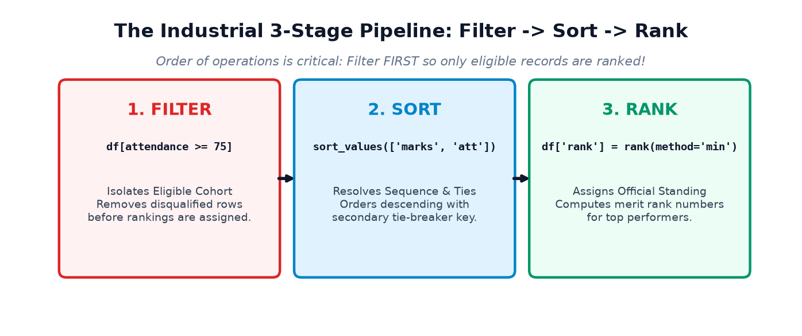
rank() kar dete hain aur uske baad low attendance wale students ko filter karke remove karte hain, toh aapki ranks corrupt ho jayengi (jaise Rank 1 aur Rank 2 filter ho gaye, toh pehla bacha hua student Rank 3 dikhayega)! Isliye hamesha ineligible records ko pehle FILTER karein, aur sirf eligible cohort par RANK assign karein!
Example 1: End-to-End Merit Board Pipeline
import pandas as pd df_all = pd.DataFrame({ 'student_id': ['S101', 'S102', 'S103', 'S104', 'S105', 'S106', 'S107'], 'name': ['Aarav', 'Diya', 'Rohan', 'Ananya', 'Kabir', 'Meera', 'Aditya'], 'department': ['CS', 'IT', 'CS', 'ECE', 'IT', 'CS', 'Mech'], 'marks': [90, 95, 78, 88, 95, 92, 85], 'attendance': [88, 92, 85, 75, 96, 70, 84] # Ananya (75) and Meera (70) ineligible }) # 1. STAGE 1: FILTER (Attendance >= 80% eligibility) df_eligible = df_all[df_all['attendance'] >= 80].copy() # 2. STAGE 2: SORT (Primary: marks desc, Secondary: attendance desc) df_sorted = df_eligible.sort_values(by=['marks', 'attendance'], ascending=[False, False]) # 3. STAGE 3: RANK (Assign official rank with min method) df_sorted['merit_rank'] = df_sorted['marks'].rank(ascending=False, method='min').astype(int) print("--- Official College Leaderboard (Eligible Students Only) ---") print(df_sorted[['merit_rank', 'name', 'department', 'marks', 'attendance']])
Notice how Meera (92 marks) was filtered out due to 70% attendance. Kabir and Diya tied at 95 marks and received Joint Rank 1, while Aarav received Rank 3!
13. Visual Data Exploration: Charts That Prove the Numbers
Jab aap sorting aur filtering apply karte hain, toh visual charts decision-makers ko instantly samajh aate hain. Yahan hamare code execution se generate huye verified charts hain:
1. Top Students Leaderboard Chart
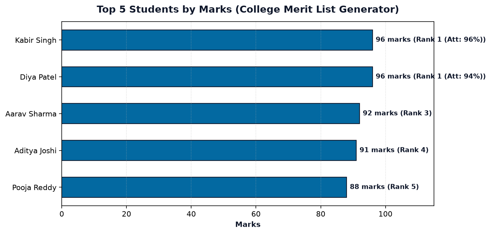
2. Attendance Eligibility Audit Chart
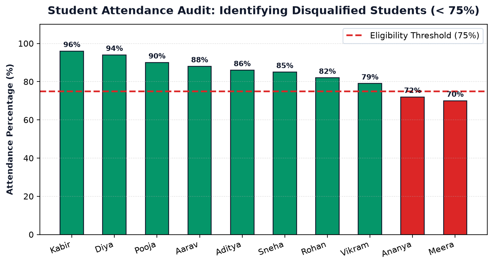
3. Aggregated Product Revenue Rankings
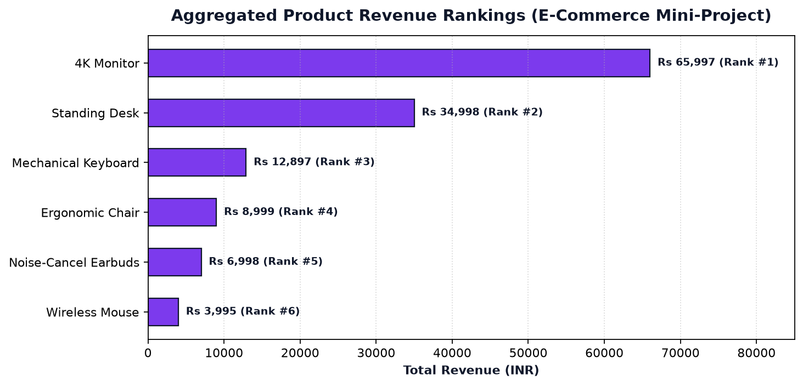
4. Department Performance Comparison
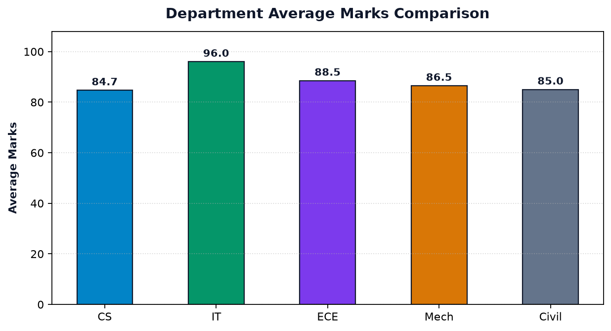
5. Filtered vs Unfiltered Cohort Funnel
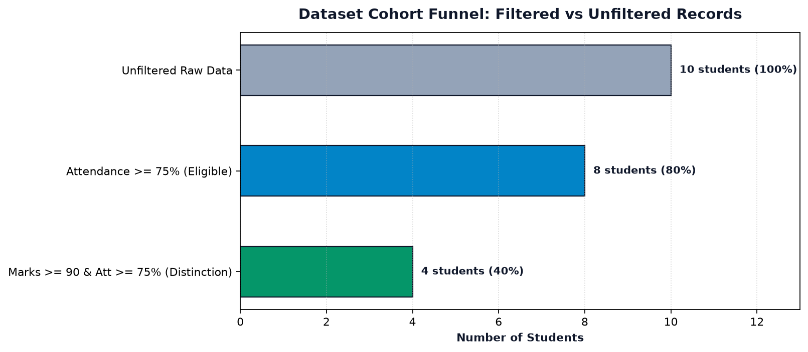
14. Real-World Mini-Project 1: College Merit List Generator
Is guided capstone mini-project mein hum University Examination Cell ke liye ek automated Merit List Generator pipeline banayenge. Yeh pipeline raw student records ko ingest karegi, attendance rules ke hisaab se ineligible students ko filter karegi, ties ko attendance se break karegi, ranks assign karegi, aur result ko verify karke clean CSV mein export karegi.
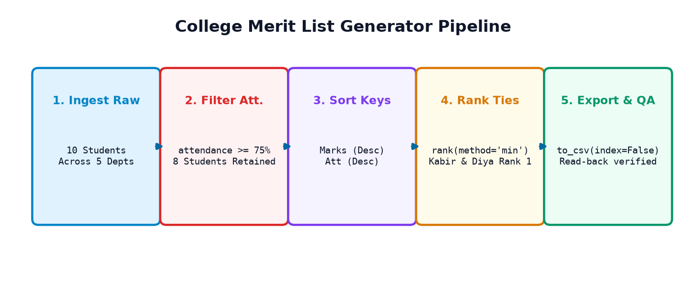
The Complete Executable 10-Step Pipeline
import os import pandas as pd # ============================================================== # STEP 1: Ingest Raw Student Examination Records # ============================================================== college_raw = { 'student_id': ['STU-01', 'STU-02', 'STU-03', 'STU-04', 'STU-05', 'STU-06', 'STU-07', 'STU-08', 'STU-09', 'STU-10'], 'student_name': ['Aarav Sharma', 'Diya Patel', 'Rohan Verma', 'Ananya Iyer', 'Kabir Singh', 'Meera Nair', 'Aditya Joshi', 'Pooja Reddy', 'Vikram Malhotra', 'Sneha Kulkarni'], 'department': ['CS', 'IT', 'CS', 'ECE', 'IT', 'CS', 'Mech', 'ECE', 'Mech', 'Civil'], 'marks': [92.0, 96.0, 78.0, 89.0, 96.0, 84.0, 91.0, 88.0, 82.0, 85.0], 'attendance': [88.0, 94.0, 82.0, 72.0, 96.0, 70.0, 86.0, 90.0, 79.0, 85.0] } df_col = pd.DataFrame(college_raw) print(f"Step 1: Loaded raw dataset with {df_col.shape[0]} students.") # ============================================================== # STEP 2: Filter Eligible Cohort (Attendance >= 75%) # ============================================================== df_eligible = df_col[df_col['attendance'] >= 75.0].copy() disqualified_count = len(df_col) - len(df_eligible) print(f"Step 2: Filtered cohort -> {len(df_eligible)} eligible students ({disqualified_count} disqualified for low attendance).") # ============================================================== # STEP 3 & 4: Multi-Column Sort (Marks Desc, Attendance Desc) # ============================================================== df_sorted = df_eligible.sort_values(by=['marks', 'attendance'], ascending=[False, False]) # ============================================================== # STEP 5 & 6: Compute Competitive Ranks (method='min') # ============================================================== df_sorted['rank'] = df_sorted['marks'].rank(ascending=False, method='min').astype(int) # ============================================================== # STEP 7: Extract Top 5 Honors Cohort # ============================================================== top5_merit = df_sorted.head(5).copy() print("\n--- Step 7: Top 5 College Honors Merit List ---") print(top5_merit[['rank', 'student_name', 'department', 'marks', 'attendance']]) # ============================================================== # STEPS 8, 9 & 10: Export to CSV and 100% Round-Trip Verification # ============================================================== output_file = 'college_merit_list.csv' top5_merit.to_csv(output_file, index=False) print(f"\nStep 9: Successfully exported {output_file} with index=False.") df_verified = pd.read_csv(output_file) assert df_verified.shape == (5, 6), "Dimensions mismatch!" assert df_verified.equals(top5_merit.reset_index(drop=True)), "Integrity check failed!" print("Step 10: Round-Trip Verification PASSED! Exported disk file is 100% identical.")
Merit List Audit Findings:
- Ananya Iyer (89 marks, 72% attendance) aur Meera Nair (84 marks, 70% attendance) dono ko admission cell ne disqualify kar diya kyunki unki attendance 75% cutoff se kam thi.
- Kabir Singh aur Diya Patel dono ke 96.0 marks the (Joint Rank 1). Lekin sorting tie-breaker mein Kabir ki 96% attendance ne Diya (94%) ko lead kiya.
- Aarav Sharma ko Rank 3 mila (Rank 2 skip hua kyunki do students Rank 1 par the).
15. Real-World Mini-Project 2: E-Commerce Product Ranking Dashboard
Doosra guided capstone project retail analytics par focused hai. Yahan aap seekhenge ki jab same product alag-alag transactions mein multiple baar khareeda jaata hai, toh direct row sorting ke bajaye aggregated product revenue ranking kaise calculate ki jaati hai.
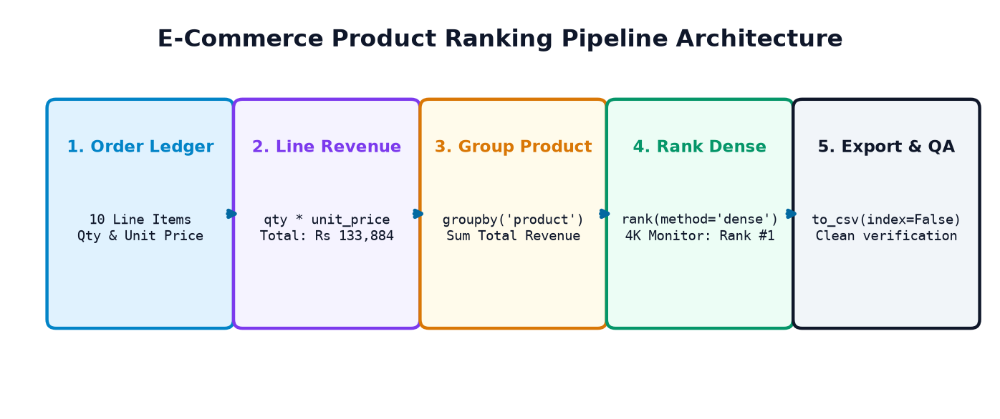
The Complete Executable 9-Step Pipeline
import pandas as pd # ============================================================== # STEP 1 & 2: Ingest Orders and Calculate Line-Item Revenue # ============================================================== orders_raw = { 'order_id': ['ORD-101', 'ORD-102', 'ORD-103', 'ORD-104', 'ORD-105', 'ORD-106', 'ORD-107', 'ORD-108', 'ORD-109', 'ORD-110'], 'product': ['4K Monitor', 'Wireless Mouse', 'Mechanical Keyboard', '4K Monitor', 'Ergonomic Chair', 'Wireless Mouse', 'Standing Desk', 'Mechanical Keyboard', 'Noise-Cancel Earbuds', 'Standing Desk'], 'category': ['Displays', 'Accessories', 'Peripherals', 'Displays', 'Furniture', 'Accessories', 'Furniture', 'Peripherals', 'Audio', 'Furniture'], 'quantity': [1, 2, 1, 2, 1, 3, 1, 2, 2, 1], 'unit_price': [21999.0, 799.0, 4299.0, 21999.0, 8999.0, 799.0, 17499.0, 4299.0, 3499.0, 17499.0] } df_ecom = pd.DataFrame(orders_raw) df_ecom['line_revenue'] = df_ecom['quantity'] * df_ecom['unit_price'] print(f"Step 2: Total Gross Ledger Revenue: Rs {df_ecom['line_revenue'].sum():,.2f}") # ============================================================== # STEP 3 & 4: Group by Product and Aggregate Revenue # ============================================================== prod_summary = df_ecom.groupby(['product', 'category']).agg( total_quantity=('quantity', 'sum'), total_revenue=('line_revenue', 'sum') ).reset_index() # ============================================================== # STEP 5 & 6: Sort and Rank Products (method='dense') # ============================================================== prod_sorted = prod_summary.sort_values(by='total_revenue', ascending=False).reset_index(drop=True) prod_sorted['revenue_rank'] = prod_sorted['total_revenue'].rank(ascending=False, method='dense').astype(int) print("\n--- Step 6: Product Revenue Rankings ---") print(prod_sorted[['revenue_rank', 'product', 'category', 'total_quantity', 'total_revenue']]) # ============================================================== # STEPS 8 & 9: Export and Round-Trip Verification # ============================================================== ecom_csv = 'ecommerce_product_rankings.csv' prod_sorted.to_csv(ecom_csv, index=False) print(f"\nStep 8: Exported {ecom_csv} with index=False.") df_prod_check = pd.read_csv(ecom_csv) assert df_prod_check.equals(prod_sorted), "Product rankings mismatch!" print("Step 9: Product Rankings Round-Trip Verification PASSED!")
Key E-Commerce Insight: Notice how Wireless Mouse had the highest sales volume (5 units sold across orders ORD-102 and ORD-106), but ranked dead last (Rank #6) in revenue due to its low Rs 799 unit price. In contrast, 4K Monitor sold only 3 units but captured 49.3% of total revenue (Rs 65,997) to secure Rank #1!
16. Top 12 Beginner Mistakes & Pro Debugging Tips
Sorting, ranking, aur filtering mein beginners aksar in 12 traps mein phans jaate hain:
| # | Common Junior Mistake | Why It Breaks Your Workflow | Correct Pro Practice |
|---|---|---|---|
| 1 | Using Python and / or in DataFrame filters |
Raises ValueError: The truth value of a Series is ambiguous. |
Always use bitwise operators: & for AND, | for OR. |
| 2 | Forgetting parentheses in compound filters | Raises TypeError: cannot compare a dtyped series with a scalar due to operator precedence. |
Always wrap every condition in brackets: (cond1) & (cond2). |
| 3 | Testing for missing values with df['col'] == np.nan |
Always evaluates to False for every single row because IEEE 754 NaN != NaN. |
Always use df['col'].isna() or df['col'].isnull(). |
| 4 | Confusing Sorting with Ranking | Sorting changes physical table row sequence; Ranking assigns a position metric. | Use sort_values() to reorder; use rank() to calculate medal standings. |
| 5 | Ranking before filtering in merit calculations | Disqualified students occupy top ranks, leaving gaps in the final filtered report. | Always FILTER disqualified records first, then apply rank() on the eligible subset! |
| 6 | Using inplace=True without saving backups |
Permanently mutates the DataFrame, making it impossible to recover raw data on mistake. | Avoid inplace=True; assign sorted results to descriptive variable names. |
| 7 | Assuming rank(method='min') produces contiguous ranks |
Tied values skip subsequent rank numbers (e.g., 1, 2, 2, 4). | Use method='dense' if you need contiguous ranks without gaps (1, 2, 2, 3). |
| 8 | Writing repetitive chained ORs instead of isin() |
(df['x'] == 'A') | (df['x'] == 'B') | (df['x'] == 'C') is slow and error-prone. |
Use clean, vectorized df['x'].isin(['A', 'B', 'C']). |
| 9 | Forgetting @ prefix when referencing variables in query() |
Raises UndefinedVariableError because Pandas searches for a column name. |
Always prefix Python variable names with @ inside query strings: @min_val. |
| 10 | Believing alphabetical month sorting is chronological | sort_index() sorts strings alphabetically: April, February, January, March! |
Convert date strings to true datetime using pd.to_datetime() before sorting. |
| 11 | Forgetting inclusive='both' default in between() |
Beginners accidentally include boundary values when they wanted strictly between. | Explicitly specify inclusive='neither', 'left', or 'right' when needed. |
| 12 | Forgetting reset_index(drop=True) after sorting/filtering |
Jumbled index labels (e.g., 4, 1, 0, 5) confuse downstream row lookups with .iloc. |
Call .reset_index(drop=True) when clean 0-indexed sequential rows are required. |
17. Practice & Revision Challenges
Apne concepts ko cement karne ke liye yeh 39 interactive questions & exercises solve kijiye. Har question ke detailed solution ko dekhne ke liye tap/click kijiye.
Part A: Output Prediction Questions (10 Questions)
Q1: df.sort_values(by='marks') ka default sorting direction kya hota hai?
Output: Ascending order (lowest to highest / A to Z).
Explanation: sort_values() ka default parameter ascending=True hota hai.
Q2: pd.Series([90, 90, 80]).rank(ascending=False, method='min') ka output kya hoga?
Output: [1.0, 1.0, 3.0]
Explanation: Dono 90 values tied hain for 1st place, isliye dono ko 1 milta hai. Next score 80 ko position 3 milta hai (2 skip hota hai).
Q3: pd.Series([90, 90, 80]).rank(ascending=False, method='dense') ka output kya hoga?
Output: [1.0, 1.0, 2.0]
Explanation: dense method mein ties ke baad rank numbers skip nahi hote, isliye 80 ko rank 2 milta hai.
Q4: df[df['marks'] == np.nan] kya return karega?
Output: Empty DataFrame (0 rows).
Explanation: IEEE 754 floating point standard ke hisaab se np.nan == np.nan hamesha False hota hai. Missing values ke liye isna() use karein.
Q5: df[(df['a'] > 5) & (df['b'] < 10)] mein '&' ke bajaye 'and' likhne par kya error aayega?
Output: ValueError: The truth value of a Series is ambiguous.
Explanation: Python ka and keyword scalar boolean chahta hai, jabki Pandas mein element-wise bitwise & use hota hai.
Q6: pd.Series([10, 20, 30, 40]).between(20, 30) ka boolean mask kya hoga?
Output: [False, True, True, False]
Explanation: between() by default inclusive='both' hota hai, isliye 20 aur 30 dono True hote hain.
Q7: df.query("marks >= @cutoff") mein '@' ka kya purpose hai?
Output: Python environment ke variable cutoff ko query string ke andar reference karna.
Explanation: Bina @ ke Pandas cutoff ko DataFrame ka column header samajhkar UndefinedVariableError throw karega.
Q8: ~df['dept'].isin(['CS', 'IT']) kya select karta hai?
Output: Sabhi students jo CS aur IT ke alawa kisi doosre department mein hain.
Explanation: Tilde ~ boolean mask ko invert (negate) kar deta hai.
Q9: df.sort_values(by=['dept', 'salary'], ascending=[True, False]) mein secondary column kab use hota hai?
Output: Sirf tab jab dept column mein tie (equal values) ho.
Explanation: Multi-column sorting mein secondary key sirf primary key ties ko break karne ke liye evaluate hoti hai.
Q10: df.sort_index(ascending=False) DataFrame ko kaise sort karega?
Output: Row index labels ko reverse order (highest to lowest) mein arrange karega.
Explanation: sort_index() column values ko ignore karke row labels par sorting karta hai.
Part B: Practical Coding Exercises (10 Exercises)
E1: Ek statement likhiye jo DataFrame ko 'price' column ke hisaab se descending order mein sort kare.
sorted_df = df.sort_values(by='price', ascending=False)
Explanation: ascending=False highest price ko top par arrange karta hai.
E2: Students ko department ascending aur marks descending order mein sort kijiye.
sorted_df = df.sort_values(by=['department', 'marks'], ascending=[True, False])
Explanation: List of columns aur list of booleans provide karke mixed direction sorting hoti hai.
E3: Column 'marks' par dense ranking calculate karke naye column 'dense_rank' mein store kijiye.
df['dense_rank'] = df['marks'].rank(ascending=False, method='dense').astype(int)
Explanation: method='dense' ranks ke beech mein koi gap nahi chhodta.
E4: Un students ko filter kijiye jinke marks 80 se 90 ke beech hain (dono boundaries excluded).
filtered = df[df['marks'].between(80, 90, inclusive='neither')]
Explanation: inclusive='neither' strict inequality ($80 < \text{marks} < 90$) enforce karta hai.
E5: Un orders ko filter kijiye jinki category 'Electronics' ya 'Accessories' ho using isin().
tech_orders = df[df['category'].isin(['Electronics', 'Accessories'])]
Explanation: isin() set membership check karta hai bina multiple OR conditions likhe.
E6: query() method use karke filter kijiye: marks >= 85 and department == 'CS'.
res = df.query("marks >= 85 and department == 'CS'")
Explanation: query() clean string expressions aur standard English keywords (and) allow karta hai.
E7: Un records ko filter kijiye jinme 'attendance' column NaN (missing) hai.
missing_att = df[df['attendance'].isna()]
Explanation: .isna() missing cells ke liye True mask banata hai.
E8: Jumbled index wale DataFrame ko wapas 0 se sequential index mein reset kijiye.
clean_df = df.reset_index(drop=True)
Explanation: drop=True purane jumbled index ko column banaye bina drop kar deta hai.
E9: Filter kijiye: (marks > 90) OR (attendance > 95) lekin department NOT 'Civil'.
cond = ((df['marks'] > 90) | (df['attendance'] > 95)) & (df['department'] != 'Civil') res = df[cond]
Explanation: Nested parentheses complex logic ko explicitly group karte hain.
E10: Top 3 highest salary employees filter karke display kijiye using sort_values aur head.
top3 = df.sort_values(by='salary', ascending=False).head(3)
Explanation: Descending sort karke head(3) lene se top 3 highest earners milte hain.
Part C: Multiple Choice Questions (10 MCQs)
M1: DataFrame.sort_values() mein default sorting direction kya hoti hai?
Options: (A) Descending (B) Ascending (C) Random (D) Chronological
Answer: (B) Ascending
Explanation: By default ascending=True hota hai (lowest to highest).
M2: Equal values (ties) aane par method='min' rank mein kya karta hai?
Options: (A) Average rank deta hai (B) Lowest rank number deta hai aur gaps create karta hai (C) Error throw karta hai (D) Random rank deta hai
Answer: (B) Lowest rank number deta hai aur gaps create karta hai
Explanation: Sports ranking jaisa kaam karta hai; do students 2nd par hain toh next student 4th hoga.
M3: Kaun sa ranking method ties ke baad rank numbers mein koi gap nahi chhodta?
Options: (A) average (B) min (C) dense (D) first
Answer: (C) dense
Explanation: dense method ranks ko bina kisi gap ke 1, 2, 3... sequence mein increment karta hai.
M4: Multiple boolean conditions ko combine karne ke liye Pandas mein kaun sa operator use hota hai?
Options: (A) and (B) && (C) & (D) AND
Answer: (C) &
Explanation: Pandas element-wise bitwise & operator use karta hai.
M5: df.query() ke andar Python script ke variable ko reference karne ke liye kya lagate hain?
Options: (A) $var (B) @var (C) #var (D) :var
Answer: (B) @var
Explanation: @variable syntax environment ke variables ko query string mein inject karta hai.
M6: df['marks'].between(80, 90) ka default behavior kya hota hai?
Options: (A) Strict exclusive (B) Left inclusive only (C) Inclusive on both 80 and 90 (D) Right inclusive only
Answer: (C) Inclusive on both 80 and 90
Explanation: Default inclusive='both' hota hai, jisme $80 \le \text{marks} \le 90$ match hota hai.
M7: sort_values() aur sort_index() mein kya antar hai?
Options: (A) Dono same hain (B) sort_values columns ke data par sort karta hai; sort_index row labels par sort karta hai (C) sort_index sirf numbers sort karta hai (D) sort_values index delete kar deta hai
Answer: (B) sort_values columns ke data par sort karta hai; sort_index row labels par sort karta hai
Explanation: sort_values content-based hai; sort_index index-label based hai.
M8: Merit list generate karte waqt pehla step kya hona chahiye?
Options: (A) rank() (B) to_csv() (C) Filter ineligible students (D) sort_index()
Answer: (C) Filter ineligible students
Explanation: Pehle ineligible records filter karein taaki sirf qualified candidates par authentic ranks calculate hon.
M9: ~df['col'].isin(['A', 'B']) ka kya matlab hai?
Options: (A) Select only A and B (B) Select everything EXCEPT A and B (C) Replace A with B (D) Error
Answer: (B) Select everything EXCEPT A and B
Explanation: Tilde ~ NOT operator hai jo set membership ko invert kar deta hai.
M10: Jab sorting ke baad row index jumbled ho jata hai (e.g. 4, 1, 0), use reset karne ke liye kya use hota hai?
Options: (A) df.clean_index() (B) df.reset_index(drop=True) (C) df.new_index() (D) df.sort_index()
Answer: (B) df.reset_index(drop=True)
Explanation: reset_index(drop=True) sequential 0, 1, 2... RangeIndex restore karta hai.
Part D: Debugging Challenges (6 Challenges)
D1: Buggy Code: Missing parentheses in compound condition
Buggy Code:
filtered = df[df['marks'] >= 80 & df['attendance'] >= 75] # Raises TypeError
Diagnosis: Bitwise & ki priority >= se higher hai, isliye Python 80 & df['attendance'] evaluate karne lagta hai.
Corrected Code:
filtered = df[(df['marks'] >= 80) & (df['attendance'] >= 75)]
D2: Buggy Code: Searching for NaN using equality operator
Buggy Code:
missing = df[df['marks'] == np.nan] # Returns empty DataFrame!
Diagnosis: np.nan == np.nan hamesha False hota hai.
Corrected Code:
missing = df[df['marks'].isna()]
D3: Buggy Code: Undefined variable in query()
Buggy Code:
min_price = 1000 res = df.query("price > min_price") # Raises UndefinedVariableError
Diagnosis: Python variable ko query string ke andar @ lagakar inject karna padta hai.
Corrected Code:
min_price = 1000 res = df.query("price > @min_price")
D4: Buggy Code: Mixed sort directions with single boolean
Buggy Code:
sorted_df = df.sort_values(by=['dept', 'salary'], ascending=False) # User wanted dept A-Z but salary High-Low!
Diagnosis: Single boolean False dono columns par apply ho gaya, jisse department Z-A sort ho gaya.
Corrected Code:
sorted_df = df.sort_values(by=['dept', 'salary'], ascending=[True, False])
D5: Buggy Code: Ranking all rows before filtering
Buggy Code:
df['rank'] = df['marks'].rank(ascending=False) eligible = df[df['attendance'] >= 75] # Disqualified students stole top ranks!
Diagnosis: Disqualified students ko rank mil chuki thi, jisse eligible list mein Rank 1 missing tha.
Corrected Code:
eligible = df[df['attendance'] >= 75].copy() eligible['rank'] = eligible['marks'].rank(ascending=False, method='min').astype(int)
D6: Buggy Code: Accidentally overwriting original DataFrame
Buggy Code:
df.sort_values(by='marks', inplace=True) # Original raw order destroyed!
Diagnosis: inplace=True raw data ko permanently mutate kar deta hai.
Corrected Code:
df_sorted_marks = df.sort_values(by='marks', ascending=False)
Part E: Real-World Dataset Scenarios (3 Scenarios)
Scenario 1: Hospital Emergency Triage Prioritization
Situation: Emergency room mein 100 patients ka inflow hua hai. Doctors ko critical patients pehle attend karne hain.
Pipeline Strategy:
- Filter:
df[df['triage_category'].isin(['Red', 'Yellow'])](Critical patients only). - Sort:
df_crit.sort_values(by=['triage_severity', 'arrival_time'], ascending=[False, True])(Highest severity first, tie-break by arrival). - Rank:
df_crit['queue_position'] = range(1, len(df_crit) + 1).
Scenario 2: E-Commerce Flash Sale Cart Checkout Lock
Situation: Flash sale mein 500 units available hain, lekin 2,000 customers ne cart add kiya hai.
Pipeline Strategy:
- Filter:
df[df['payment_verified'] == True]. - Sort:
df_paid.sort_values(by='checkout_timestamp', ascending=True)(First-come, first-served). - Filter Top 500:
winners = df_paid.head(500).
Scenario 3: Banking Credit Card High-Risk Transaction Flag
Situation: Bank risk team ko international transactions inspect karni hain jo suspicious amount ki hain.
Pipeline Strategy:
- Filter with compound conditions:
df.query("amount > 50000 and is_international == True and card_present == False"). - Sort:
suspicious.sort_values(by='risk_score', ascending=False). - Rank with dense method to assign risk priority tiers.
18. Summary, Quick Reference Cheat Sheet, Glossary & Next Steps
Core Methods Quick Reference Table
| Operation | Pandas Method / Syntax | Parameters / Modifiers | Typical Real-World Use Case |
|---|---|---|---|
| Column Sorting | df.sort_values(by=...) |
ascending=True/False |
Leaderboards, price high-to-low catalogs. |
| Multi-Column Sort | df.sort_values(by=['c1', 'c2']) |
ascending=[True, False] |
Department A-Z with salary high-low tie-breakers. |
| Index Sorting | df.sort_index() |
ascending=True/False |
Restoring sequential order or chronological dates. |
| Ranking | df['col'].rank() |
method='min'/'dense'/'average' |
Olympic sports standings, corporate sales tiers. |
| Comparison Filter | df[df['col'] >= val] |
==, !=, >, <, >=, <= |
Threshold selection (marks >= 80, price < 1000). |
| Compound Filter | df[(c1) & (c2)] |
& (AND), | (OR), ~ (NOT) |
Multi-criteria scholarship eligibility. |
| Set Membership | df[df['col'].isin([...])] |
Negation with ~isin(...) |
Filter specific departments, categories, or cities. |
| Range Filtering | df[df['col'].between(a, b)] |
inclusive='both'/'neither' |
Budget ranges, score brackets [60, 80]. |
| String Queries | df.query("expr") |
Variables with @variable |
Clean, readable SQL-like filtering expressions. |
| Missing Filter | df[df['col'].isna()] |
Valid with .notna() |
Isolate missing records for data quality audit. |
Glossary of Essential Technical Terms
- Sorting: Table ki physical rows ke sequence ko kisi column ya index ke values ke according re-arrange karna.
- Ranking: Rows ki physical order ko badle bina har row ko ek numerical position metric (1.0, 2.0...) assign karna.
- Boolean Mask: Ek
TrueaurFalsevalues ki Series jo condition evaluate karke generate hoti hai. - Dense Ranking (method='dense'): Ek ranking algorithm jo tied values ke baad rank numbers mein koi gap nahi chhodti (1, 2, 2, 3).
- Min Ranking (method='min'): Sports competition ranking jo tied values ko lowest rank assign karti hai aur gaps chhodti hai (1, 2, 2, 4).
- Bitwise Operators (&, |, ~): Element-wise logical operators jo Pandas Series ke boolean masks ko combine karne ke liye mandatory hote hain.
- Query Expression: Ek text string jo DataFrame columns par condition evaluate karti hai (e.g.,
"marks >= @cutoff"). - Tie-Breaker: Ek secondary column jo sirf tab evaluate hota hai jab primary sorting key par do ya zyada rows identical hoti hain.